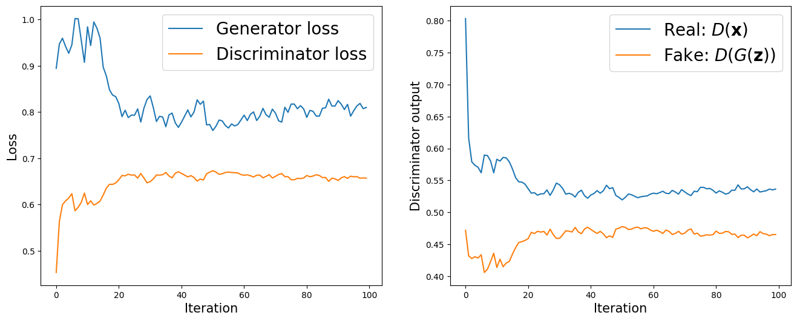
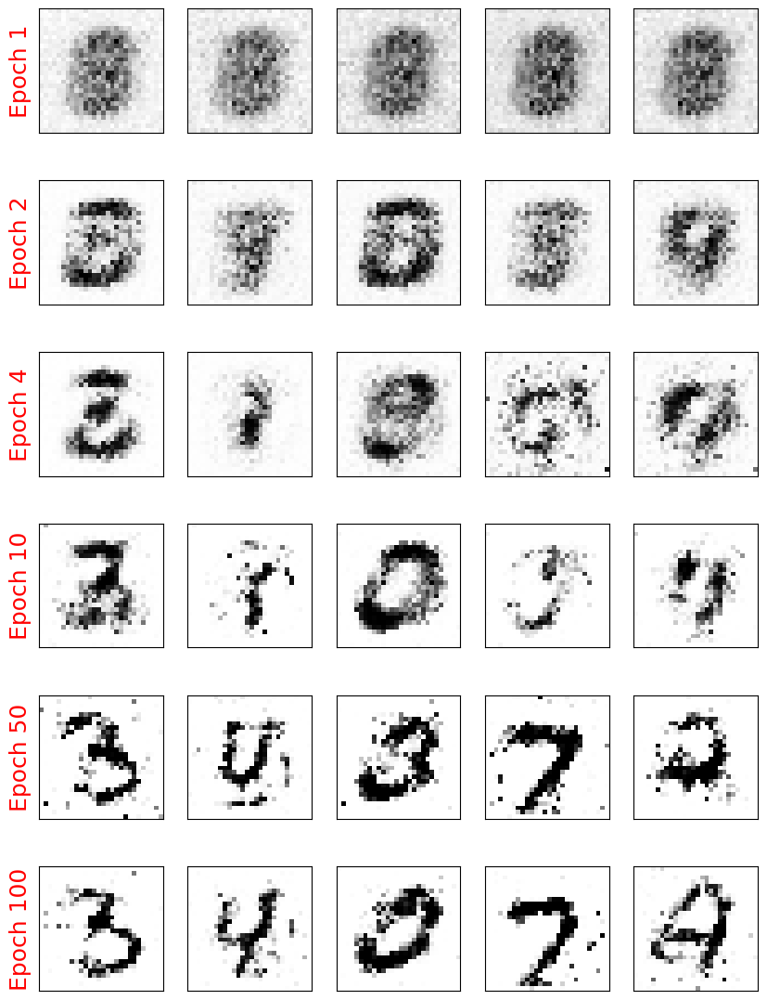

Notebook inspired to S. Raschka et al, ML with PyTorch and sklearn
23. Generative Adversarial Networks#
import torch
print(torch.__version__)
print("GPU Available:", torch.cuda.is_available())
if torch.cuda.is_available():
device = torch.device("cuda:0")
else:
device = "cpu"
2.5.0+cu121
GPU Available: True
# !pip install torchvision
#from google.colab import drive
#drive.mount('/content/drive/')
23.1. Implementation of the generator and the discriminator networks#

Source: Raschka et al, reference book

Source: Raschka et al, reference book
import torch.nn as nn
import numpy as np
import matplotlib.pyplot as plt
%matplotlib inline
## define a function for the generator:
def make_generator_network(
input_size=20,
num_hidden_layers=1,
num_hidden_units=100,
num_output_units=784):
model = nn.Sequential()
for i in range(num_hidden_layers):
model.add_module(f'fc_g{i}',
nn.Linear(input_size,
num_hidden_units))
model.add_module(f'relu_g{i}',
nn.LeakyReLU())
input_size = num_hidden_units
model.add_module(f'fc_g{num_hidden_layers}',
nn.Linear(input_size, num_output_units))
model.add_module('tanh_g', nn.Tanh())
return model
## define a function for the discriminator:
def make_discriminator_network(
input_size,
num_hidden_layers=1,
num_hidden_units=100,
num_output_units=1):
model = nn.Sequential()
for i in range(num_hidden_layers):
model.add_module(f'fc_d{i}',
nn.Linear(input_size,
num_hidden_units, bias=False))
model.add_module(f'relu_d{i}',
nn.LeakyReLU())
model.add_module('dropout', nn.Dropout(p=0.5))
input_size = num_hidden_units
model.add_module(f'fc_d{num_hidden_layers}',
nn.Linear(input_size, num_output_units))
model.add_module('sigmoid', nn.Sigmoid())
return model
image_size = (28, 28)
z_size = 20
gen_hidden_layers = 1
gen_hidden_size = 100
disc_hidden_layers = 1
disc_hidden_size = 100
torch.manual_seed(1)
gen_model = make_generator_network(
input_size=z_size,
num_hidden_layers=gen_hidden_layers,
num_hidden_units=gen_hidden_size,
num_output_units=np.prod(image_size))
print(gen_model)
Sequential(
(fc_g0): Linear(in_features=20, out_features=100, bias=True)
(relu_g0): LeakyReLU(negative_slope=0.01)
(fc_g1): Linear(in_features=100, out_features=784, bias=True)
(tanh_g): Tanh()
)
disc_model = make_discriminator_network(
input_size=np.prod(image_size),
num_hidden_layers=disc_hidden_layers,
num_hidden_units=disc_hidden_size)
print(disc_model)
Sequential(
(fc_d0): Linear(in_features=784, out_features=100, bias=False)
(relu_d0): LeakyReLU(negative_slope=0.01)
(dropout): Dropout(p=0.5, inplace=False)
(fc_d1): Linear(in_features=100, out_features=1, bias=True)
(sigmoid): Sigmoid()
)
23.2. Defining the training dataset#
import torchvision
from torchvision import transforms
image_path = './'
transform = transforms.Compose([
transforms.ToTensor(), # the input image is scaled to [0.0, 1.0]
transforms.Normalize(mean=(0.5), std=(0.5)),
])
mnist_dataset = torchvision.datasets.MNIST(root=image_path,
train=True,
transform=transform,
download=True)
"""
example, label = next(iter(mnist_dataset))
print(f'Min: {example.min()} Max: {example.max()}')
print(example.shape)
print(label)
"""
# Create an iterator for the dataset
dataset_iterator = iter(mnist_dataset)
# Fetch items sequentially
example, label = next(dataset_iterator)
print(f'Label: {label}')
# Call `next(dataset_iterator)` again to get the next item
example, label = next(dataset_iterator)
print(f'Label: {label}')
# Call `next(dataset_iterator)` again to get the next item
example, label = next(dataset_iterator)
print(f'Label: {label}')
print(f'Min: {example.min()} Max: {example.max()}')
print(example.shape)
Downloading http://yann.lecun.com/exdb/mnist/train-images-idx3-ubyte.gz
Failed to download (trying next):
<urlopen error [SSL: CERTIFICATE_VERIFY_FAILED] certificate verify failed: certificate has expired (_ssl.c:1007)>
Downloading https://ossci-datasets.s3.amazonaws.com/mnist/train-images-idx3-ubyte.gz
Downloading https://ossci-datasets.s3.amazonaws.com/mnist/train-images-idx3-ubyte.gz to ./MNIST/raw/train-images-idx3-ubyte.gz
100%|██████████| 9.91M/9.91M [00:00<00:00, 16.1MB/s]
Extracting ./MNIST/raw/train-images-idx3-ubyte.gz to ./MNIST/raw
Downloading http://yann.lecun.com/exdb/mnist/train-labels-idx1-ubyte.gz
Failed to download (trying next):
<urlopen error [SSL: CERTIFICATE_VERIFY_FAILED] certificate verify failed: certificate has expired (_ssl.c:1007)>
Downloading https://ossci-datasets.s3.amazonaws.com/mnist/train-labels-idx1-ubyte.gz
Downloading https://ossci-datasets.s3.amazonaws.com/mnist/train-labels-idx1-ubyte.gz to ./MNIST/raw/train-labels-idx1-ubyte.gz
100%|██████████| 28.9k/28.9k [00:00<00:00, 508kB/s]
Extracting ./MNIST/raw/train-labels-idx1-ubyte.gz to ./MNIST/raw
Downloading http://yann.lecun.com/exdb/mnist/t10k-images-idx3-ubyte.gz
Failed to download (trying next):
<urlopen error [SSL: CERTIFICATE_VERIFY_FAILED] certificate verify failed: certificate has expired (_ssl.c:1007)>
Downloading https://ossci-datasets.s3.amazonaws.com/mnist/t10k-images-idx3-ubyte.gz
Downloading https://ossci-datasets.s3.amazonaws.com/mnist/t10k-images-idx3-ubyte.gz to ./MNIST/raw/t10k-images-idx3-ubyte.gz
100%|██████████| 1.65M/1.65M [00:00<00:00, 4.43MB/s]
Extracting ./MNIST/raw/t10k-images-idx3-ubyte.gz to ./MNIST/raw
Downloading http://yann.lecun.com/exdb/mnist/t10k-labels-idx1-ubyte.gz
Failed to download (trying next):
<urlopen error [SSL: CERTIFICATE_VERIFY_FAILED] certificate verify failed: certificate has expired (_ssl.c:1007)>
Downloading https://ossci-datasets.s3.amazonaws.com/mnist/t10k-labels-idx1-ubyte.gz
Downloading https://ossci-datasets.s3.amazonaws.com/mnist/t10k-labels-idx1-ubyte.gz to ./MNIST/raw/t10k-labels-idx1-ubyte.gz
100%|██████████| 4.54k/4.54k [00:00<00:00, 11.3MB/s]
Extracting ./MNIST/raw/t10k-labels-idx1-ubyte.gz to ./MNIST/raw
Label: 5
Label: 0
Label: 4
Min: -1.0 Max: 1.0
torch.Size([1, 28, 28])
# batch_size: The number of noise vectors to generate. Typically, this corresponds to the number of samples in a batch
# z_size: The dimensionality of each noise vector.
# mode_z: Specifies the type of noise distribution to use. In GANs, it’s common to use either a uniform distribution or a normal.
def create_noise(batch_size, z_size, mode_z):
if mode_z == 'uniform':
input_z = torch.rand(batch_size, z_size)*2 - 1
elif mode_z == 'normal':
input_z = torch.randn(batch_size, z_size)
return input_z
from torch.utils.data import DataLoader
batch_size = 32
dataloader = DataLoader(mnist_dataset, batch_size, shuffle=False)
input_real, label = next(iter(dataloader))
# reshapes to a 2D tensor with dimensions (batch_size, flattened_size), where flattened_size is the product of channels, height, and width
input_real = input_real.view(batch_size, -1)
torch.manual_seed(1)
mode_z = 'uniform' # 'uniform' vs. 'normal'
input_z = create_noise(batch_size, z_size, mode_z)
print('input-z -- shape:', input_z.shape)
print('input-real -- shape:', input_real.shape)
g_output = gen_model(input_z)
print('Output of G -- shape:', g_output.shape)
d_proba_real = disc_model(input_real)
d_proba_fake = disc_model(g_output)
print('Disc. (real) -- shape:', d_proba_real.shape)
print('Disc. (fake) -- shape:', d_proba_fake.shape)
input-z -- shape: torch.Size([32, 20])
input-real -- shape: torch.Size([32, 784])
Output of G -- shape: torch.Size([32, 784])
Disc. (real) -- shape: torch.Size([32, 1])
Disc. (fake) -- shape: torch.Size([32, 1])
23.3. Training the GAN model#
loss_fn = nn.BCELoss()
## Loss for the Generator
g_labels_real = torch.ones_like(d_proba_fake)
g_loss = loss_fn(d_proba_fake, g_labels_real)
print(f'Generator Loss: {g_loss:.4f}')
## Loss for the Discriminator
d_labels_real = torch.ones_like(d_proba_real)
d_labels_fake = torch.zeros_like(d_proba_fake)
d_loss_real = loss_fn(d_proba_real, d_labels_real)
d_loss_fake = loss_fn(d_proba_fake, d_labels_fake)
print(f'Discriminator Losses: Real {d_loss_real:.4f} Fake {d_loss_fake:.4f}')
Generator Loss: 0.6983
Discriminator Losses: Real 0.7479 Fake 0.6885
Final training
batch_size = 64
torch.manual_seed(1)
np.random.seed(1)
## Set up the dataset
mnist_dl = DataLoader(mnist_dataset, batch_size=batch_size,
shuffle=True, drop_last=True)
## Set up the models
gen_model = make_generator_network(
input_size=z_size,
num_hidden_layers=gen_hidden_layers,
num_hidden_units=gen_hidden_size,
num_output_units=np.prod(image_size)).to(device)
#image_size = (height, width, channels), then np.prod(image_size) will give total number of elements (or pixels if it's a 2D or 3D image) in that shape
disc_model = make_discriminator_network(
input_size=np.prod(image_size),
num_hidden_layers=disc_hidden_layers,
num_hidden_units=disc_hidden_size).to(device)
## Loss function and optimizers:
loss_fn = nn.BCELoss()
g_optimizer = torch.optim.Adam(gen_model.parameters())
d_optimizer = torch.optim.Adam(disc_model.parameters())
## Train the discriminator
def d_train(x):
disc_model.zero_grad()
# Train discriminator with a real batch
batch_size = x.size(0)
x = x.view(batch_size, -1).to(device)
d_labels_real = torch.ones(batch_size, 1, device=device)
d_proba_real = disc_model(x)
d_loss_real = loss_fn(d_proba_real, d_labels_real)
# Train discriminator on a fake batch
input_z = create_noise(batch_size, z_size, mode_z).to(device)
g_output = gen_model(input_z)
d_proba_fake = disc_model(g_output)
d_labels_fake = torch.zeros(batch_size, 1, device=device)
d_loss_fake = loss_fn(d_proba_fake, d_labels_fake)
# gradient backprop & optimize ONLY D's parameters
d_loss = d_loss_real + d_loss_fake
d_loss.backward()
d_optimizer.step()
return d_loss.data.item(), d_proba_real.detach(), d_proba_fake.detach()
# remind
# .data extracts the raw tensor data from d_loss .item() converts a single-element tensor into a regular Python float.
# .detach() creates a new tensor detached from the current computation graph
## Train the generator
def g_train(x):
gen_model.zero_grad()
batch_size = x.size(0)
input_z = create_noise(batch_size, z_size, mode_z).to(device)
g_labels_real = torch.ones(batch_size, 1, device=device) #you want to confuse the discriminator
g_output = gen_model(input_z)
d_proba_fake = disc_model(g_output)
g_loss = loss_fn(d_proba_fake, g_labels_real)
# gradient backprop & optimize ONLY G's parameters
g_loss.backward()
g_optimizer.step()
return g_loss.data.item()
*image_size
File "<ipython-input-14-b453ed9e7310>", line 1
*image_size
^
SyntaxError: can't use starred expression here
fixed_z = create_noise(batch_size, z_size, mode_z).to(device)
# Function to Create Samples from the Generator
def create_samples(g_model, input_z):
g_output = g_model(input_z)
images = torch.reshape(g_output, (batch_size, *image_size)) #becomes (batch_size, 28, 28)
# The generator outputs a tensor in the range of [−1,1] (due to the tanh activation).
# To scale it to the range [0,1] (suitable for visualization), the code performs (images+1)/2.0.
return (images+1)/2.0
epoch_samples = []
all_d_losses = []
all_g_losses = []
all_d_real = []
all_d_fake = []
num_epochs = 100
torch.manual_seed(1)
for epoch in range(1, num_epochs+1):
d_losses, g_losses = [], []
d_vals_real, d_vals_fake = [], []
for i, (x, _) in enumerate(mnist_dl):
d_loss, d_proba_real, d_proba_fake = d_train(x)
d_losses.append(d_loss)
g_losses.append(g_train(x))
d_vals_real.append(d_proba_real.mean().cpu())
d_vals_fake.append(d_proba_fake.mean().cpu())
all_d_losses.append(torch.tensor(d_losses).mean())
all_g_losses.append(torch.tensor(g_losses).mean())
all_d_real.append(torch.tensor(d_vals_real).mean())
all_d_fake.append(torch.tensor(d_vals_fake).mean())
print(f'Epoch {epoch:03d} | Avg Losses >>'
f' G/D {all_g_losses[-1]:.4f}/{all_d_losses[-1]:.4f}'
f' [D-Real: {all_d_real[-1]:.4f} D-Fake: {all_d_fake[-1]:.4f}]')
epoch_samples.append(
create_samples(gen_model, fixed_z).detach().cpu().numpy())
Epoch 001 | Avg Losses >> G/D 0.8944/0.9068 [D-Real: 0.8035 D-Fake: 0.4717]
Epoch 002 | Avg Losses >> G/D 0.9469/1.1271 [D-Real: 0.6164 D-Fake: 0.4318]
Epoch 003 | Avg Losses >> G/D 0.9596/1.1998 [D-Real: 0.5790 D-Fake: 0.4277]
Epoch 004 | Avg Losses >> G/D 0.9415/1.2163 [D-Real: 0.5737 D-Fake: 0.4305]
Epoch 005 | Avg Losses >> G/D 0.9270/1.2284 [D-Real: 0.5705 D-Fake: 0.4286]
Epoch 006 | Avg Losses >> G/D 0.9453/1.2473 [D-Real: 0.5620 D-Fake: 0.4335]
Epoch 007 | Avg Losses >> G/D 1.0020/1.1734 [D-Real: 0.5897 D-Fake: 0.4058]
Epoch 008 | Avg Losses >> G/D 1.0015/1.1883 [D-Real: 0.5890 D-Fake: 0.4110]
Epoch 009 | Avg Losses >> G/D 0.9548/1.2096 [D-Real: 0.5805 D-Fake: 0.4229]
Epoch 010 | Avg Losses >> G/D 0.9074/1.2498 [D-Real: 0.5619 D-Fake: 0.4359]
Epoch 011 | Avg Losses >> G/D 0.9841/1.2001 [D-Real: 0.5831 D-Fake: 0.4135]
Epoch 012 | Avg Losses >> G/D 0.9437/1.2165 [D-Real: 0.5803 D-Fake: 0.4267]
Epoch 013 | Avg Losses >> G/D 0.9947/1.1981 [D-Real: 0.5860 D-Fake: 0.4148]
Epoch 014 | Avg Losses >> G/D 0.9812/1.2052 [D-Real: 0.5852 D-Fake: 0.4206]
Epoch 015 | Avg Losses >> G/D 0.9600/1.2153 [D-Real: 0.5790 D-Fake: 0.4233]
Epoch 016 | Avg Losses >> G/D 0.8970/1.2414 [D-Real: 0.5677 D-Fake: 0.4347]
Epoch 017 | Avg Losses >> G/D 0.8782/1.2710 [D-Real: 0.5542 D-Fake: 0.4448]
Epoch 018 | Avg Losses >> G/D 0.8481/1.2878 [D-Real: 0.5478 D-Fake: 0.4529]
Epoch 019 | Avg Losses >> G/D 0.8366/1.2874 [D-Real: 0.5474 D-Fake: 0.4540]
Epoch 020 | Avg Losses >> G/D 0.8333/1.2935 [D-Real: 0.5441 D-Fake: 0.4560]
Epoch 021 | Avg Losses >> G/D 0.8181/1.3075 [D-Real: 0.5369 D-Fake: 0.4588]
Epoch 022 | Avg Losses >> G/D 0.7901/1.3261 [D-Real: 0.5300 D-Fake: 0.4687]
Epoch 023 | Avg Losses >> G/D 0.8039/1.3242 [D-Real: 0.5307 D-Fake: 0.4668]
Epoch 024 | Avg Losses >> G/D 0.7880/1.3316 [D-Real: 0.5269 D-Fake: 0.4704]
Epoch 025 | Avg Losses >> G/D 0.7935/1.3272 [D-Real: 0.5289 D-Fake: 0.4691]
Epoch 026 | Avg Losses >> G/D 0.7931/1.3283 [D-Real: 0.5292 D-Fake: 0.4701]
Epoch 027 | Avg Losses >> G/D 0.8068/1.3142 [D-Real: 0.5351 D-Fake: 0.4645]
Epoch 028 | Avg Losses >> G/D 0.7785/1.3344 [D-Real: 0.5266 D-Fake: 0.4737]
Epoch 029 | Avg Losses >> G/D 0.8083/1.3146 [D-Real: 0.5350 D-Fake: 0.4651]
Epoch 030 | Avg Losses >> G/D 0.8272/1.2943 [D-Real: 0.5458 D-Fake: 0.4592]
Epoch 031 | Avg Losses >> G/D 0.8349/1.2993 [D-Real: 0.5433 D-Fake: 0.4593]
Epoch 032 | Avg Losses >> G/D 0.8097/1.3111 [D-Real: 0.5375 D-Fake: 0.4647]
Epoch 033 | Avg Losses >> G/D 0.7796/1.3282 [D-Real: 0.5285 D-Fake: 0.4711]
Epoch 034 | Avg Losses >> G/D 0.7908/1.3272 [D-Real: 0.5298 D-Fake: 0.4705]
Epoch 035 | Avg Losses >> G/D 0.7892/1.3293 [D-Real: 0.5282 D-Fake: 0.4692]
Epoch 036 | Avg Losses >> G/D 0.7683/1.3390 [D-Real: 0.5240 D-Fake: 0.4765]
Epoch 037 | Avg Losses >> G/D 0.7939/1.3240 [D-Real: 0.5314 D-Fake: 0.4692]
Epoch 038 | Avg Losses >> G/D 0.7977/1.3156 [D-Real: 0.5347 D-Fake: 0.4666]
Epoch 039 | Avg Losses >> G/D 0.7768/1.3358 [D-Real: 0.5260 D-Fake: 0.4740]
Epoch 040 | Avg Losses >> G/D 0.7668/1.3419 [D-Real: 0.5221 D-Fake: 0.4767]
Epoch 041 | Avg Losses >> G/D 0.7782/1.3348 [D-Real: 0.5270 D-Fake: 0.4733]
Epoch 042 | Avg Losses >> G/D 0.7911/1.3277 [D-Real: 0.5295 D-Fake: 0.4699]
Epoch 043 | Avg Losses >> G/D 0.8046/1.3195 [D-Real: 0.5340 D-Fake: 0.4669]
Epoch 044 | Avg Losses >> G/D 0.7896/1.3253 [D-Real: 0.5300 D-Fake: 0.4702]
Epoch 045 | Avg Losses >> G/D 0.8001/1.3171 [D-Real: 0.5338 D-Fake: 0.4664]
Epoch 046 | Avg Losses >> G/D 0.8264/1.3015 [D-Real: 0.5424 D-Fake: 0.4603]
Epoch 047 | Avg Losses >> G/D 0.8166/1.3105 [D-Real: 0.5370 D-Fake: 0.4632]
Epoch 048 | Avg Losses >> G/D 0.8237/1.3064 [D-Real: 0.5387 D-Fake: 0.4608]
Epoch 049 | Avg Losses >> G/D 0.7723/1.3331 [D-Real: 0.5264 D-Fake: 0.4738]
Epoch 050 | Avg Losses >> G/D 0.7732/1.3403 [D-Real: 0.5234 D-Fake: 0.4752]
Epoch 051 | Avg Losses >> G/D 0.7602/1.3464 [D-Real: 0.5195 D-Fake: 0.4777]
Epoch 052 | Avg Losses >> G/D 0.7693/1.3406 [D-Real: 0.5234 D-Fake: 0.4766]
Epoch 053 | Avg Losses >> G/D 0.7828/1.3309 [D-Real: 0.5286 D-Fake: 0.4731]
Epoch 054 | Avg Losses >> G/D 0.7809/1.3334 [D-Real: 0.5276 D-Fake: 0.4738]
Epoch 055 | Avg Losses >> G/D 0.7710/1.3389 [D-Real: 0.5251 D-Fake: 0.4760]
Epoch 056 | Avg Losses >> G/D 0.7655/1.3407 [D-Real: 0.5229 D-Fake: 0.4769]
Epoch 057 | Avg Losses >> G/D 0.7743/1.3387 [D-Real: 0.5244 D-Fake: 0.4741]
Epoch 058 | Avg Losses >> G/D 0.7699/1.3378 [D-Real: 0.5252 D-Fake: 0.4758]
Epoch 059 | Avg Losses >> G/D 0.7731/1.3367 [D-Real: 0.5258 D-Fake: 0.4755]
Epoch 060 | Avg Losses >> G/D 0.7832/1.3297 [D-Real: 0.5286 D-Fake: 0.4724]
Epoch 061 | Avg Losses >> G/D 0.7933/1.3270 [D-Real: 0.5300 D-Fake: 0.4703]
Epoch 062 | Avg Losses >> G/D 0.7815/1.3288 [D-Real: 0.5291 D-Fake: 0.4720]
Epoch 063 | Avg Losses >> G/D 0.7950/1.3249 [D-Real: 0.5309 D-Fake: 0.4700]
Epoch 064 | Avg Losses >> G/D 0.8003/1.3193 [D-Real: 0.5331 D-Fake: 0.4669]
Epoch 065 | Avg Losses >> G/D 0.7817/1.3272 [D-Real: 0.5298 D-Fake: 0.4722]
Epoch 066 | Avg Losses >> G/D 0.7910/1.3277 [D-Real: 0.5293 D-Fake: 0.4702]
Epoch 067 | Avg Losses >> G/D 0.8080/1.3159 [D-Real: 0.5344 D-Fake: 0.4653]
Epoch 068 | Avg Losses >> G/D 0.7940/1.3221 [D-Real: 0.5317 D-Fake: 0.4670]
Epoch 069 | Avg Losses >> G/D 0.7888/1.3298 [D-Real: 0.5285 D-Fake: 0.4703]
Epoch 070 | Avg Losses >> G/D 0.8063/1.3150 [D-Real: 0.5356 D-Fake: 0.4659]
Epoch 071 | Avg Losses >> G/D 0.7977/1.3221 [D-Real: 0.5320 D-Fake: 0.4674]
Epoch 072 | Avg Losses >> G/D 0.7812/1.3301 [D-Real: 0.5285 D-Fake: 0.4721]
Epoch 073 | Avg Losses >> G/D 0.7782/1.3343 [D-Real: 0.5263 D-Fake: 0.4740]
Epoch 074 | Avg Losses >> G/D 0.8103/1.3208 [D-Real: 0.5331 D-Fake: 0.4660]
Epoch 075 | Avg Losses >> G/D 0.7995/1.3207 [D-Real: 0.5323 D-Fake: 0.4674]
Epoch 076 | Avg Losses >> G/D 0.8171/1.3076 [D-Real: 0.5392 D-Fake: 0.4627]
Epoch 077 | Avg Losses >> G/D 0.8173/1.3073 [D-Real: 0.5391 D-Fake: 0.4634]
Epoch 078 | Avg Losses >> G/D 0.8071/1.3136 [D-Real: 0.5369 D-Fake: 0.4649]
Epoch 079 | Avg Losses >> G/D 0.8138/1.3125 [D-Real: 0.5375 D-Fake: 0.4644]
Epoch 080 | Avg Losses >> G/D 0.8068/1.3150 [D-Real: 0.5345 D-Fake: 0.4651]
Epoch 081 | Avg Losses >> G/D 0.7885/1.3260 [D-Real: 0.5302 D-Fake: 0.4706]
Epoch 082 | Avg Losses >> G/D 0.8038/1.3203 [D-Real: 0.5336 D-Fake: 0.4671]
Epoch 083 | Avg Losses >> G/D 0.8016/1.3235 [D-Real: 0.5315 D-Fake: 0.4674]
Epoch 084 | Avg Losses >> G/D 0.7914/1.3291 [D-Real: 0.5286 D-Fake: 0.4700]
Epoch 085 | Avg Losses >> G/D 0.7910/1.3261 [D-Real: 0.5299 D-Fake: 0.4696]
Epoch 086 | Avg Losses >> G/D 0.8081/1.3168 [D-Real: 0.5347 D-Fake: 0.4656]
Epoch 087 | Avg Losses >> G/D 0.8091/1.3173 [D-Real: 0.5346 D-Fake: 0.4660]
Epoch 088 | Avg Losses >> G/D 0.8277/1.3005 [D-Real: 0.5430 D-Fake: 0.4605]
Epoch 089 | Avg Losses >> G/D 0.8131/1.3141 [D-Real: 0.5366 D-Fake: 0.4642]
Epoch 090 | Avg Losses >> G/D 0.8129/1.3116 [D-Real: 0.5369 D-Fake: 0.4642]
Epoch 091 | Avg Losses >> G/D 0.8247/1.3043 [D-Real: 0.5400 D-Fake: 0.4601]
Epoch 092 | Avg Losses >> G/D 0.8170/1.3157 [D-Real: 0.5354 D-Fake: 0.4627]
Epoch 093 | Avg Losses >> G/D 0.8055/1.3212 [D-Real: 0.5322 D-Fake: 0.4661]
Epoch 094 | Avg Losses >> G/D 0.8166/1.3134 [D-Real: 0.5366 D-Fake: 0.4633]
Epoch 095 | Avg Losses >> G/D 0.7911/1.3229 [D-Real: 0.5319 D-Fake: 0.4698]
Epoch 096 | Avg Losses >> G/D 0.8029/1.3202 [D-Real: 0.5329 D-Fake: 0.4667]
Epoch 097 | Avg Losses >> G/D 0.8132/1.3208 [D-Real: 0.5338 D-Fake: 0.4659]
Epoch 098 | Avg Losses >> G/D 0.8187/1.3144 [D-Real: 0.5364 D-Fake: 0.4634]
Epoch 099 | Avg Losses >> G/D 0.8073/1.3153 [D-Real: 0.5352 D-Fake: 0.4652]
Epoch 100 | Avg Losses >> G/D 0.8100/1.3143 [D-Real: 0.5364 D-Fake: 0.4652]
import itertools
fig = plt.figure(figsize=(16, 6))
## Plotting the losses
ax = fig.add_subplot(1, 2, 1)
plt.plot(all_g_losses, label='Generator loss')
half_d_losses = [all_d_loss/2 for all_d_loss in all_d_losses]
plt.plot(half_d_losses, label='Discriminator loss')
plt.legend(fontsize=20)
ax.set_xlabel('Iteration', size=15)
ax.set_ylabel('Loss', size=15)
## Plotting the outputs of the discriminator
ax = fig.add_subplot(1, 2, 2)
plt.plot(all_d_real, label=r'Real: $D(\mathbf{x})$')
plt.plot(all_d_fake, label=r'Fake: $D(G(\mathbf{z}))$')
plt.legend(fontsize=20)
ax.set_xlabel('Iteration', size=15)
ax.set_ylabel('Discriminator output', size=15)
#plt.savefig('figures/ch17-gan-learning-curve.pdf')
plt.show()

selected_epochs = [1, 2, 4, 10, 50, 100]
fig = plt.figure(figsize=(10, 14))
for i,e in enumerate(selected_epochs):
for j in range(5):
ax = fig.add_subplot(6, 5, i*5+j+1)
ax.set_xticks([])
ax.set_yticks([])
if j == 0:
ax.text(
-0.06, 0.5, f'Epoch {e}',
rotation=90, size=18, color='red',
horizontalalignment='right',
verticalalignment='center',
transform=ax.transAxes)
image = epoch_samples[e-1][j]
ax.imshow(image, cmap='gray_r')
#plt.savefig('figures/ch17-vanila-gan-samples.pdf')
plt.show()
